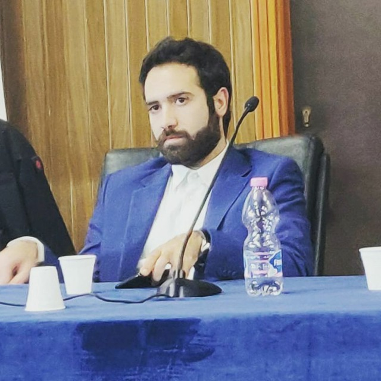

Giuseppe Cifarelli
E-mail: cifarelli1995@gmail.com
Scorri giù

Benvenuti nella mia pagina di presentazione. Mi chiamo Giuseppe
Cifarelli, sono nato a Matera il 05/07/1995. Mi avventuro in questo
nuovo percorso targato "Epicode" molto positivamente e con molta
determinazione.
Il mio hobby o interesse principale è la politica. Mi sono occupato di
politica a livello scolastico fin dalle superiori, poi a livello
universitario ed ora a livello cittadino per la mia comunità.
Sono un ragazzo introverso con persone che non conosco e molto estroverso
con persone che conosco. Mi dedico molto al benessere della mia
comunità, la reputo una condizione fondamentale anche per
il mio benessere personale.
Le mie competenze:
- Politica
- Economia
- Consulenza del lavoro
Competenze da acquisire:
- HTML
- CSS
- JavaScript
| Periodo |
Esperienze scolastiche |
| 2007-2013 |
Scuola superiore: Scientifico Tecnologico |
| 2013-2016 |
Università di Astronomia in Bologna: Ritirato |
| 2018-- |
Università di Economia in Bari |
| Periodo |
Esperienze lavorative |
| 06/2012-08/2012 |
Barista |
| 07/2013-08/2013 |
Barista |
| 10/2021-- |
Consulente del lavoro |
| 08/2022-08/2022 |
Tuttofare in Hotel |